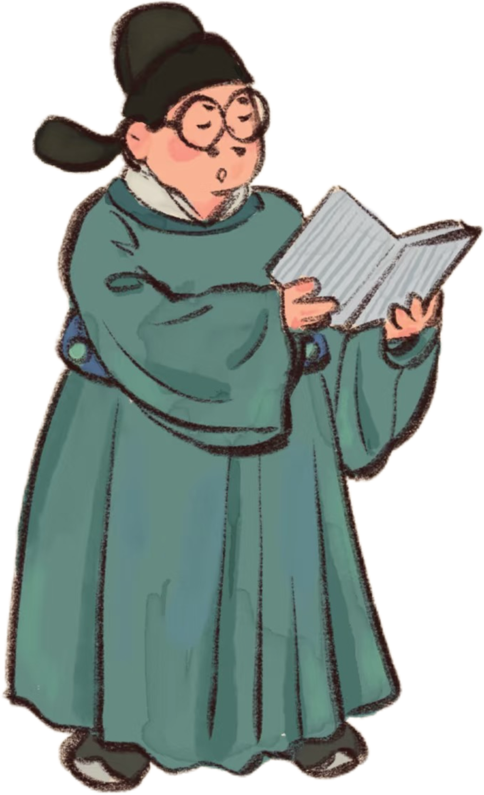
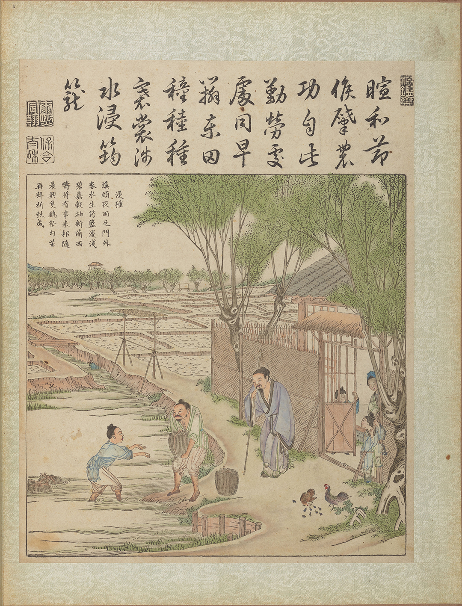
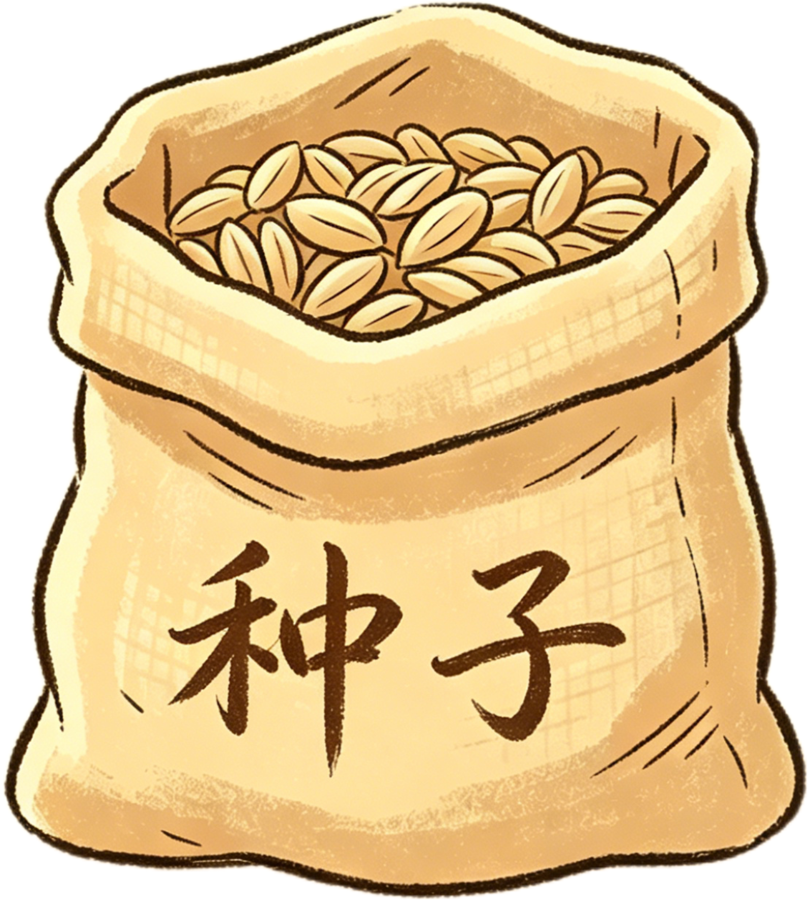
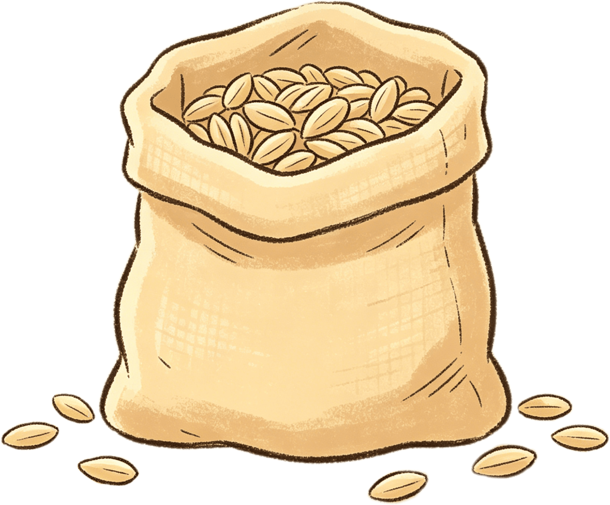
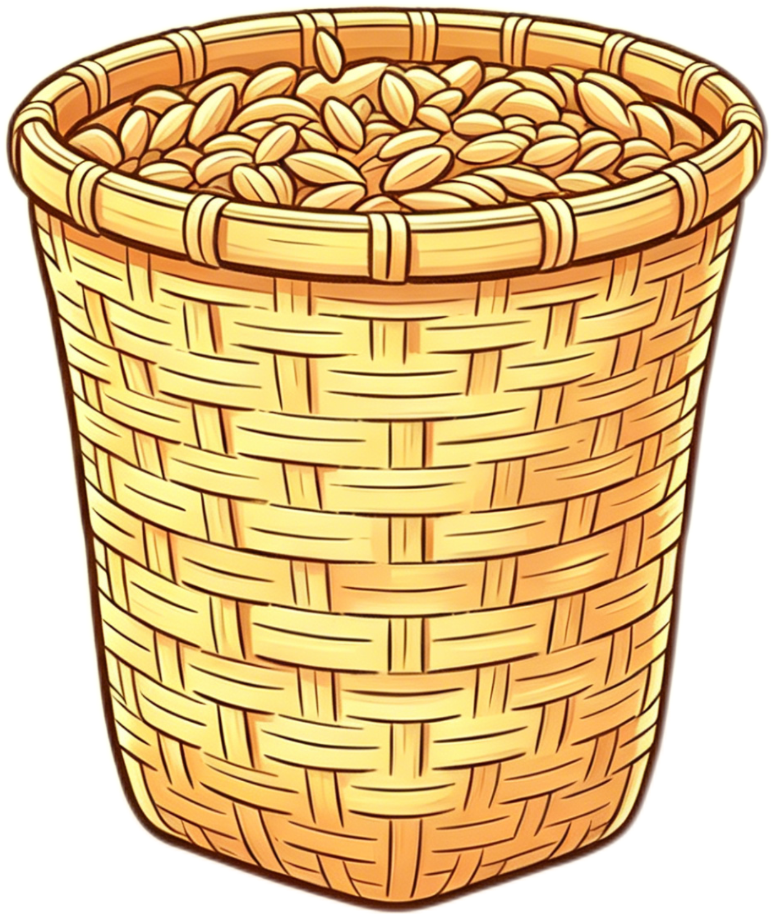
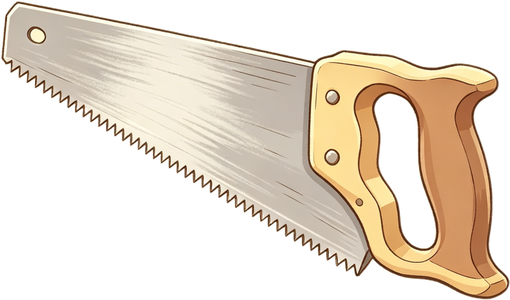
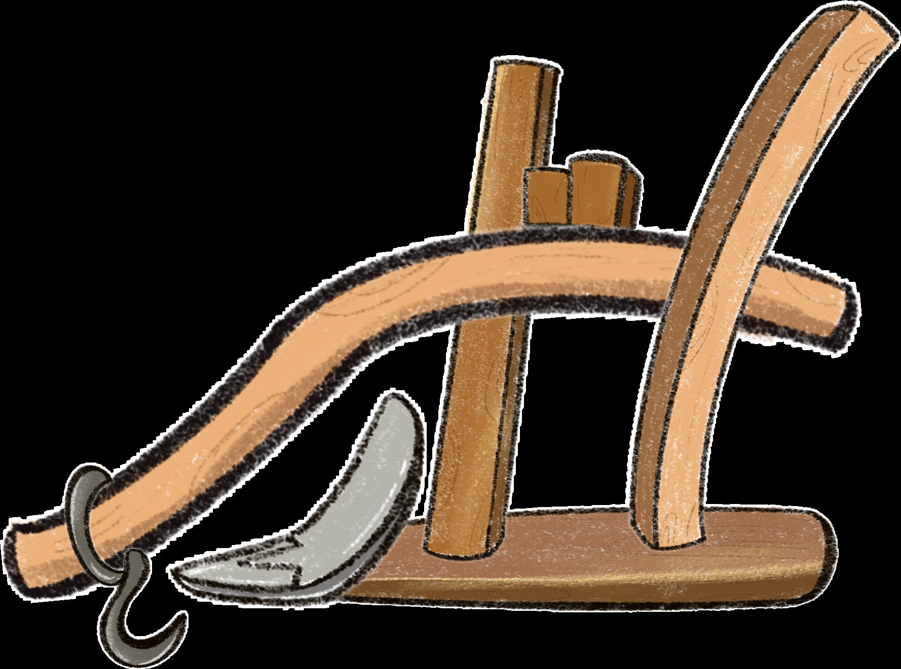

跟着画卷一起走进春耕时节，备种、浸种、制犁，完成一场温柔又热闹的田间冒险。
第一步
选择你的角色
点击人物查看放大预览，选定后进入春耕旅程。

书生
懂农时，也懂故事，最适合替大家翻开这幅画卷。

暖风吹醒田野，春耕正要开始。你需要先备好种子，才好迎接这一年的收成。

种子商店
老板说，答对一题就多送一袋种子。多一分准备，多一分丰收的把握。
当前种子
1

基础种子已经备好一袋。

答题成功可再领一袋奖励种子。
第二步
收下奖励种子
这袋种子要先倒进竹筐，再进行浸泡，才算真正准备妥当。

第三步
浸种准备
点击浸泡，竹筐会自动移入水边并完成约 3 秒读条。

浸泡区域

竹筐已经就位，点击开始浸泡。
种子备齐后，就该为耕地准备一件真正的好工具了。挑对木材，才能做出稳当的曲辕犁。
请选择更适合做农具的木材。
第四步
锯开木头
来回拖动锯子，把木头加工成适合拼装的部件。


拖动锯子沿着虚线来回移动，完成开料。
第五步
拼装曲辕犁
先点选左边部件，再点右边对应区域完成拼装，不再需要拖拽。
还差 7 个部件，把它们都拼回去。
请先点选一个部件，再点右侧高亮区域放置。

完成啦
你的曲辕犁做好啦
种子醒了，木料也成器了。接下来，我们就能一起下田春耕。
章节收尾
后续关卡尚未解锁
这一卷先到这里，后面的耕地章节还在制作中，敬请期待下一次更新。